Префектура Айти · Нагоя, Овари и Микава · ремёсла
Пятнадцать ремёсел Айти: керамика, шёлк, алтари, камень и кисти
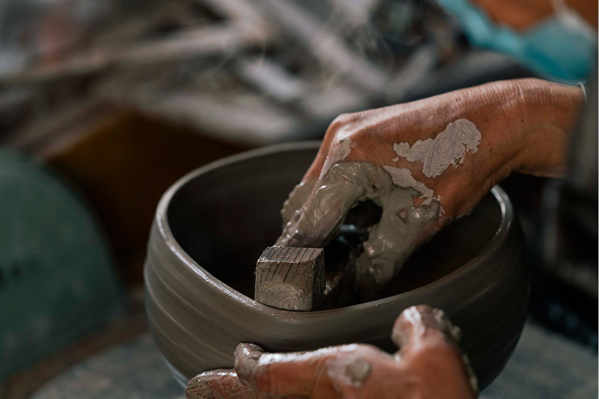
Айти знают как родину японского автопрома, но задолго до заводов здесь жили гончары, красильщики, резчики алтарей и каменотёсы. Пятнадцать здешних ремёсел носят государственный статус традиционных, и почти все они до сих пор работают на повседневную жизнь.
Начало
Почему именно Айти
Айти самая промышленная префектура Японии. По данным статистики 2019 года, её заводы ежегодно выпускают продукции больше чем на 48 трлн иен, и по этому показателю она 42 года подряд первая в стране. На производстве здесь заняты больше 860 000 человек, и это тоже первое место.
Рядом с автомобилями, станками и самолётами в Айти живут старые ремёсла. Пятнадцать из них министр экономики Японии признал «традиционными изделиями»: так называют вещи, которые делают в основном вручную, по унаследованной технике и из отобранного сырья. Эти ремёсла сложились между эпохой Нара и эпохой Эдо, и каждое выросло из здешней природы и истории.
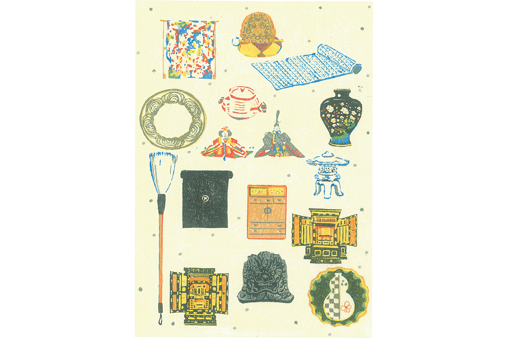
Префектура когда-то делилась на две провинции. Западной, Овари, правил дом Овари, старший из трёх родов-ветвей семьи Токугава. Восточную, Микаву, поделили между собой несколько небольших княжеств. По рекам Кисо и Ягиси с гор сплавляли хороший лес, поэтому здесь развились столярные ремёсла: алтари и комоды. Хорошая глина и камень дали керамику в Овари, а в Микаве черепицу и каменные изделия.
Через обе провинции шёл тракт Токайдо с девятью почтовыми станциями. По нему приходили новые техники, а путники разносили славу местных вещей по всей стране: так прославились нагойский юдзэн и перегородчатая эмаль Овари. Ещё часть ремёсел родилась из политики княжества. Чёрные гербовые ткани и праздничные карпы-нобори выросли из производства флагов и знамён для самого княжества, сибори Аримацу-Наруми княжество берегло как свой фирменный товар, а буддийскую утварь и кисти поощряли как подработку для обедневших низших самураев.
Керамика
Две из шести древних печей Японии
Токонамэ-яки
Печи Токонамэ на полуострове Тита работают с конца эпохи Хэйан. Сначала здесь делали большие кувшины и сосуды, в эпоху Адзути-Момояма добавились чайная утварь, вазы для цветов и обычная посуда, а в Новое время канализационные трубы, плитка и сантехника. Из шести древних печей Японии у Токонамэ был самый большой объём производства.
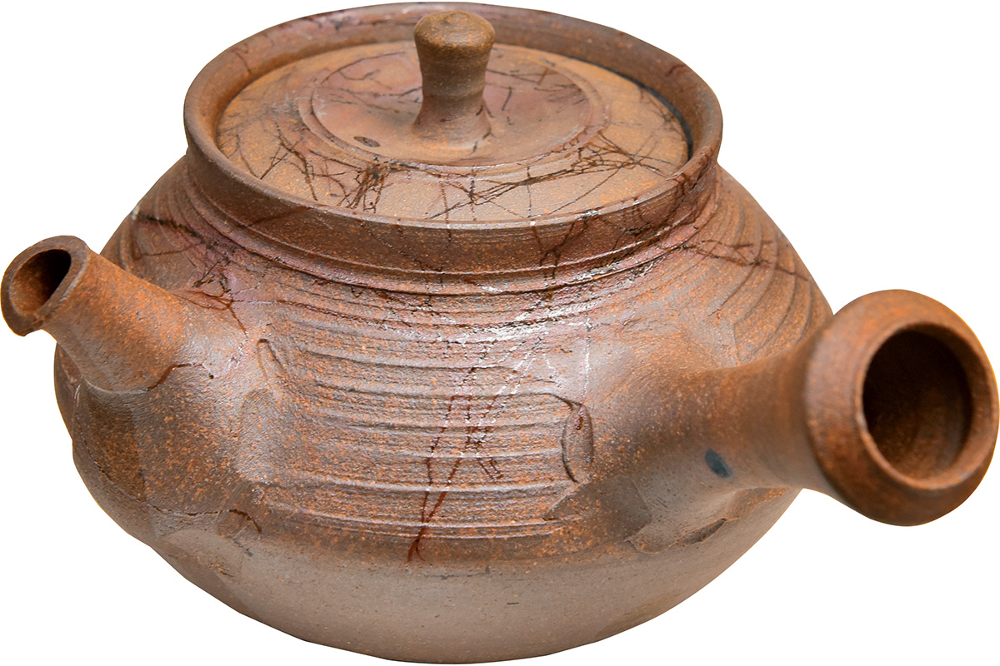
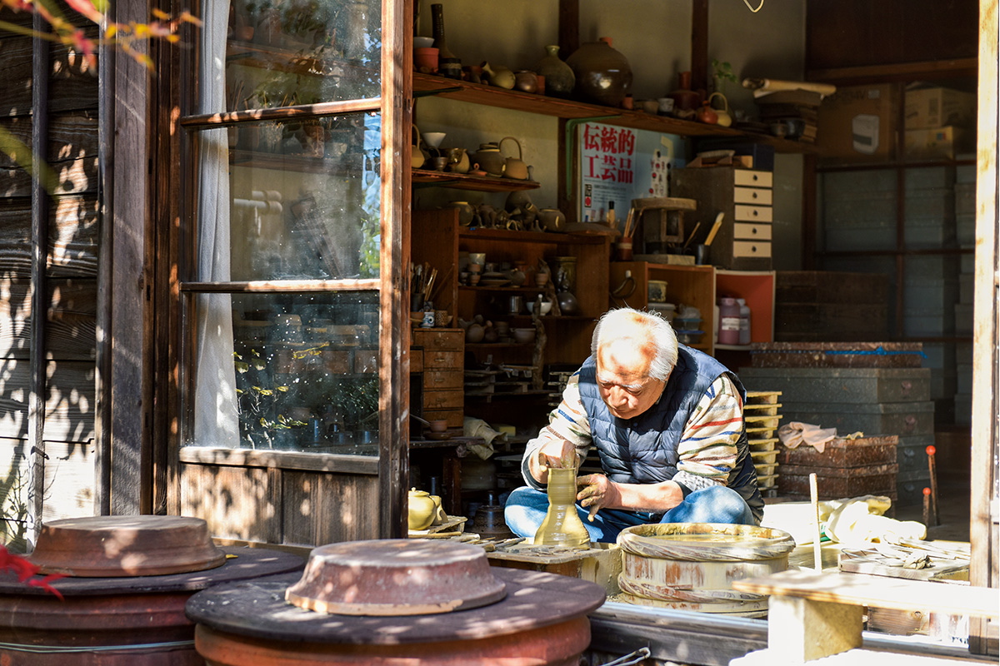
Местная глина вязкая и мелкая, из неё можно вылепить и крошечную чашку, и огромный сосуд. Железо в глине при обжиге даёт красный цвет: так получается керамика «сюдэй», и её чайники кюсу известны с конца эпохи Эдо и эпохи Мэйдзи. Каждая мастерская смешивает глину по своему рецепту, чтобы её фактура была заметнее.
«Почувствуйте, какая тонкая глина у Токонамэ»
гончар из Токонамэ
Акадзу-яки и Сэто сомэцукэ-яки
Два других керамических ремесла Айти родом из Сэто, города к северо-востоку от Нагои, о котором у нас есть отдельная большая статья.
Печи Акадзу так стары, что ещё в эпоху Нара здесь обжигали серую керамику суэки, а в эпоху Камакура мастера первыми в Японии стали покрывать посуду глазурью. Под влиянием чайной церемонии в эпоху Адзути-Момояма сложились стили орибэ и сино, а позже печи работали на дом Овари. Мастера сочетают семь глазурей и двенадцать способов украшения, а для глазурей орибэ и офукэ берут железосодержащее сырьё, которого добывают всё меньше. «Пока есть сырьё, будем работать здесь», говорят два мастера одной из печей.
Сэто сомэцукэ-яки началось с росписи кобальтовой краской госу по образцу киотской керамики и народных картинок оцу-э. Белая огнеупорная глина Сэто после обжига остаётся мягко-белой, и на ней хорошо видна даже бледная роспись: синие цветы, птицы и пейзажи. В Сэто так расписывали сначала не фарфор, а глиняную посуду, крепкую и удобную. «Чем дольше пользуешься посудой, тем она лучше», говорит наследник восьмого поколения одной из старых мастерских.
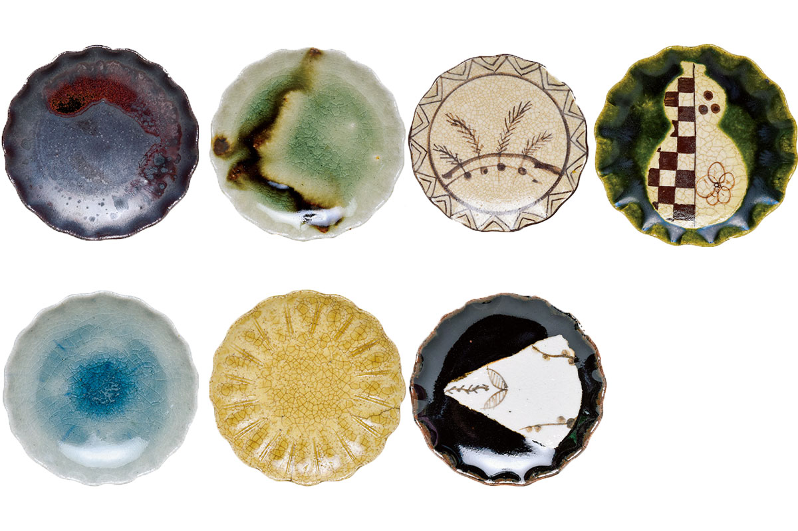
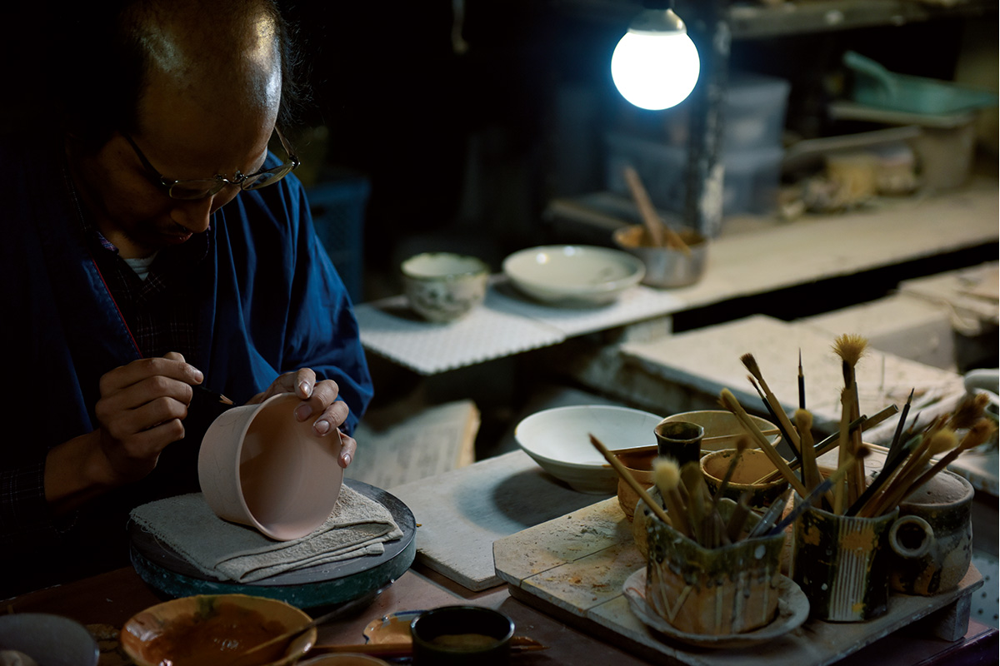

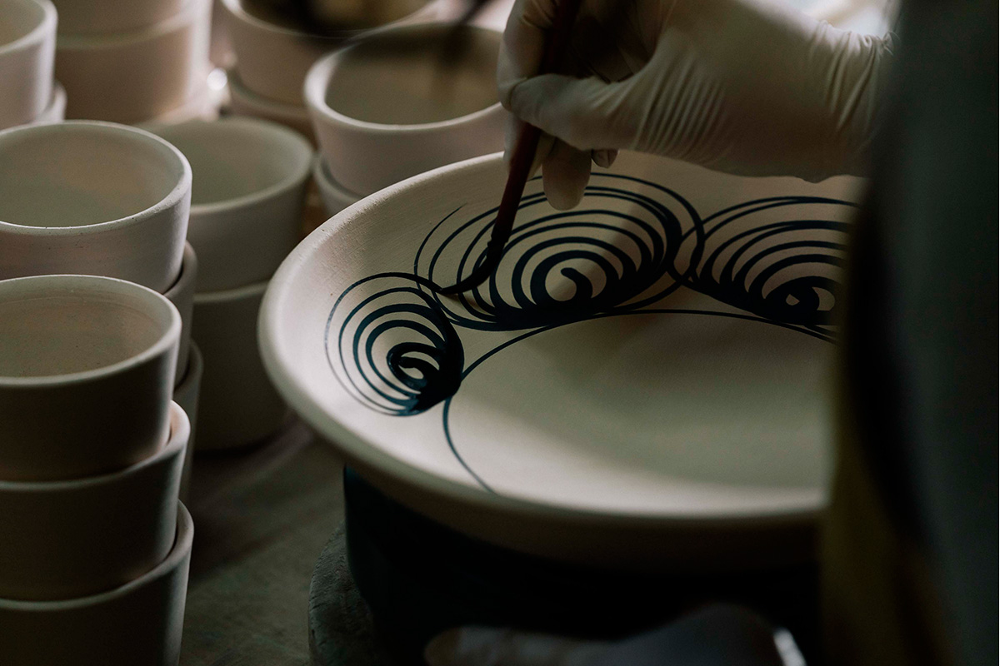
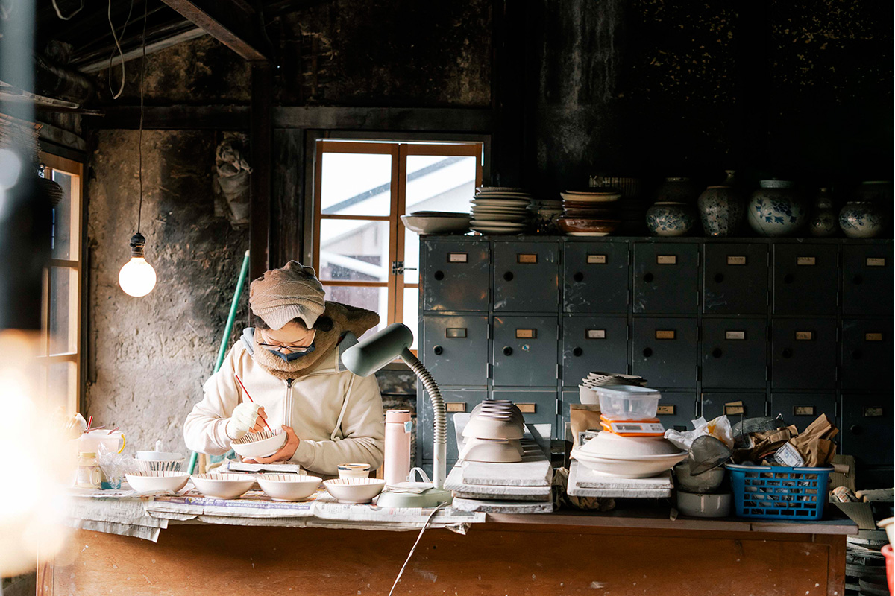
Ткани
Шёлк, сибори и чёрный цвет
Нагоя юдзэн
Нагойский юдзэн обязан своим появлением Мунэхару Токугаве (1696–1764), седьмому князю Овари. Он проводил политику процветания, в городе расцвела культура трат и удовольствий, и в Нагою пришёл яркий расписной шёлк юдзэн из Киото и Эдо. После его отставки княжество вернулось к бережливости, и нагойские мастера стали работать сдержаннее, малым числом цветов.
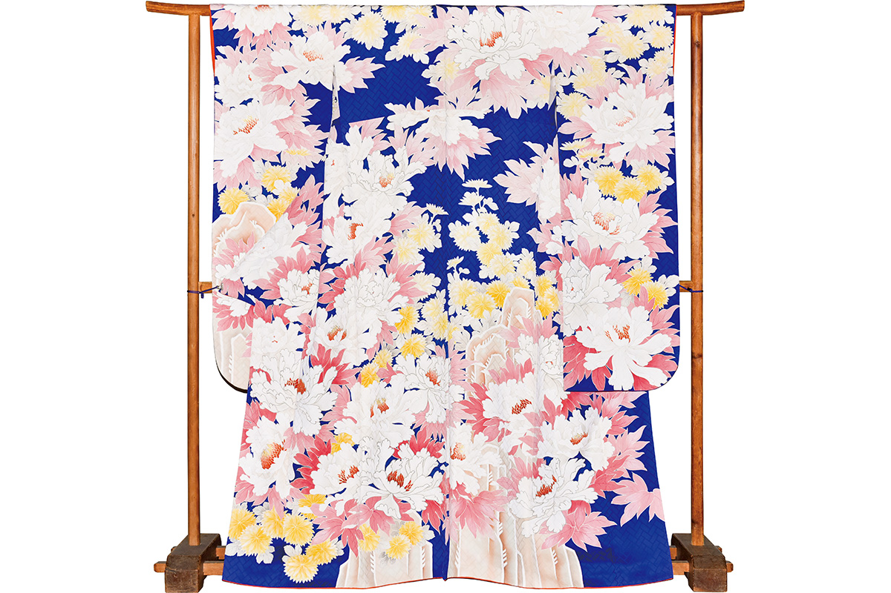
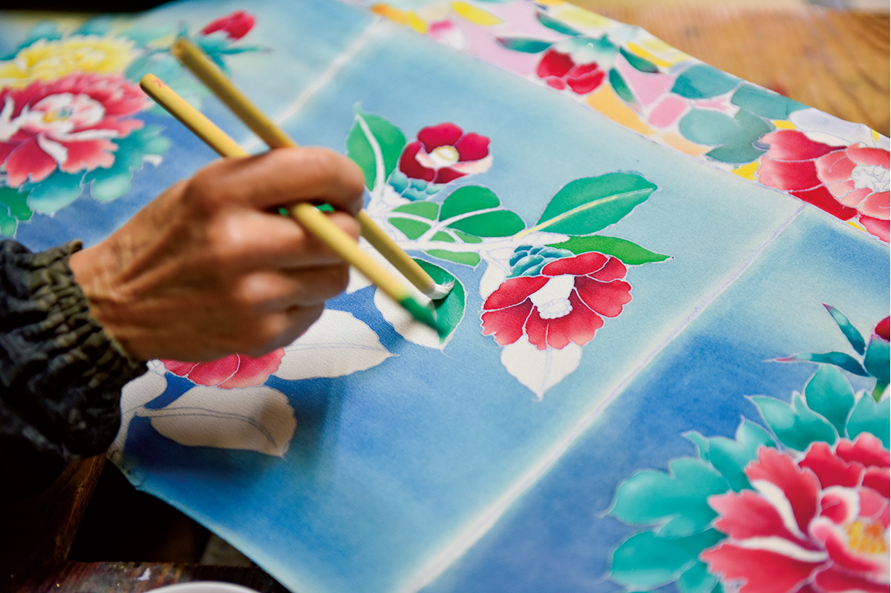
Главная черта нагойского юдзэна в росписи оттенками одного цвета. В этом стиле один мастер делает всё сам, от рисунка до отделки. Секрет, по словам двух мастеров одной мастерской, в белиле гофун из толчёных ракушек: несколько капель гофуна в краске сразу меняют оттенок. На вид юдзэн пёстрый, но рождён он в городе, который ценит скромность.
Аримацу-Наруми сибори
Ткань сибори, узор которой получается от перевязки и окрашивания, в Аримацу делают с годов Кэйтё (1596–1615). По преданию, Сёкуро Такэда увидел крашеную одежду мастеров, приехавших с Кюсю строить замок Нагоя, и начал продавать путникам на Токайдо полотенца тэнугуи, окрашенные тем же способом. Техник перевязки больше семидесяти, и у каждого этапа свои мастера. «Работу часто делали дома, и умение переходило от родителей к детям», говорит глава старой красильни. Об этом ремесле у нас есть отдельная статья.
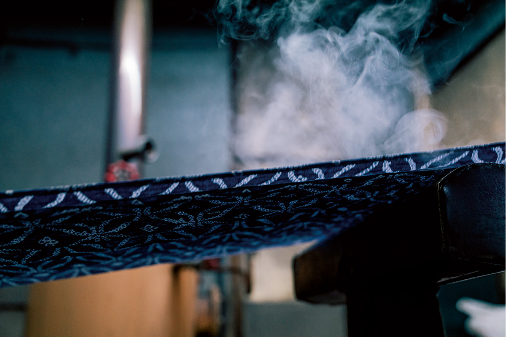
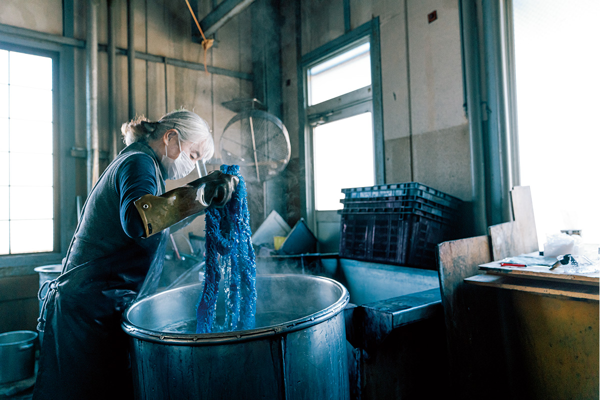
Нагоя куромонцуки-дзомэ
Чёрное кимоно с белыми гербами семьи стало парадной одеждой только в эпоху Мэйдзи, но гербы старше: их носили ещё аристократы эпохи Хэйан, а потом переняли самураи. Нагойское ремесло началось в 1610 году, когда семья самураев Овари стала делать флаги и знамёна княжества.
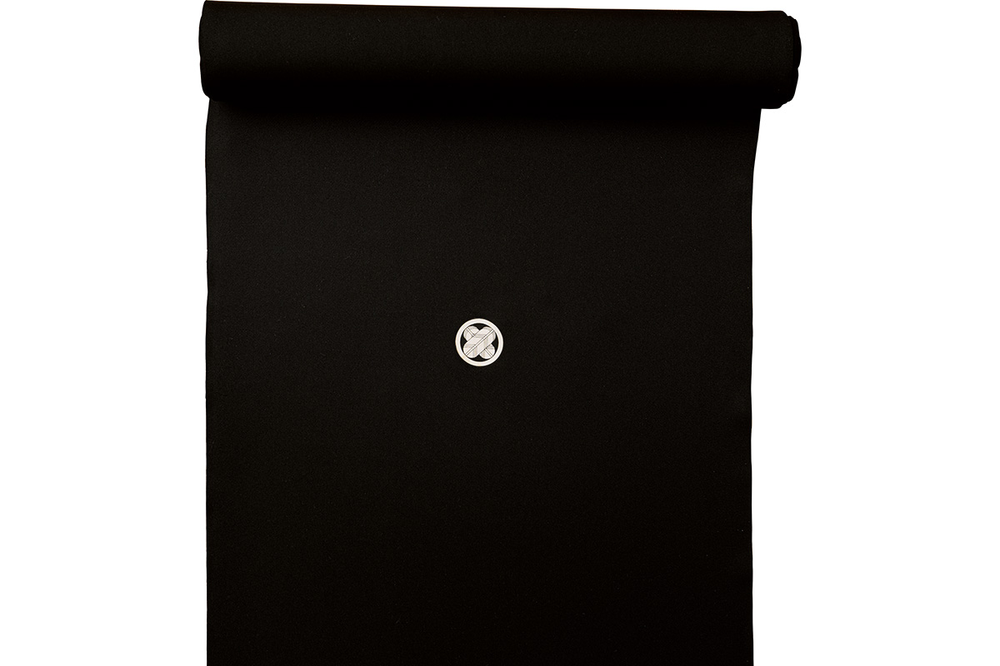
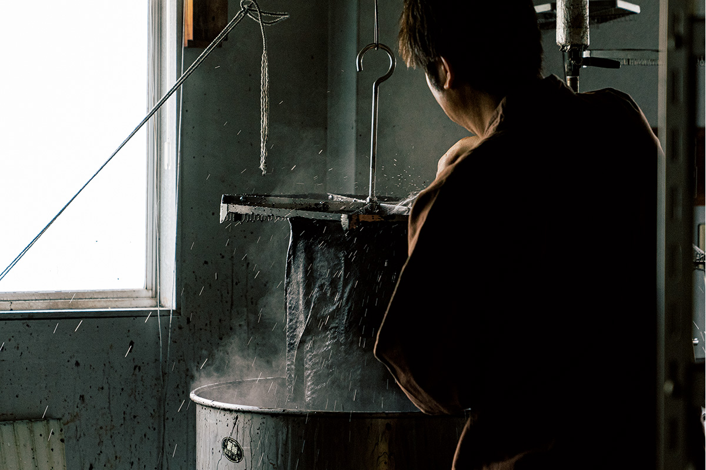
Позже красильщики применили технику зажима досками, известную по сибори. Трафарет с гербом зажимают между металлическими сетками, и герб остаётся белым. Ткань либо окунают в горячую краску, либо красят кистью, а для самого глубокого чёрного её сначала окрашивают красным или синим. «Рисунок гербов очень отточенный, он не надоедает», говорит мастер красильни. Эту вещь делают вдвоём: красильщик и художник, который прорисовывает герб.
Алтари
Золото, лак и резьба для домашней молитвы
Микава буцудан
Буддийские алтари Микавы начались, по преданию, в 1704 году: семья мастеров стала делать их из кипариса, сосны и криптомерии, которые сплавляли по реке Ягиси, и из лака, который собирали у горы Санагэ на севере Микавы. Под покровительством Иэясу Токугавы (1543–1616), основателя последнего сёгуната, местным мастерам разрешили сусальное золото. Отсюда пышность здешних алтарей.
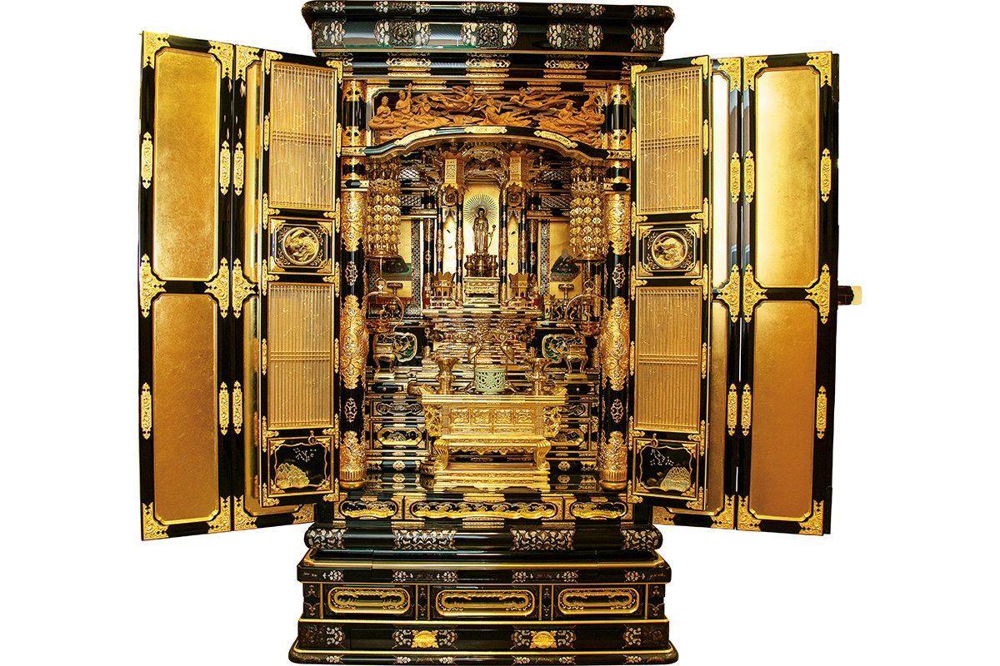
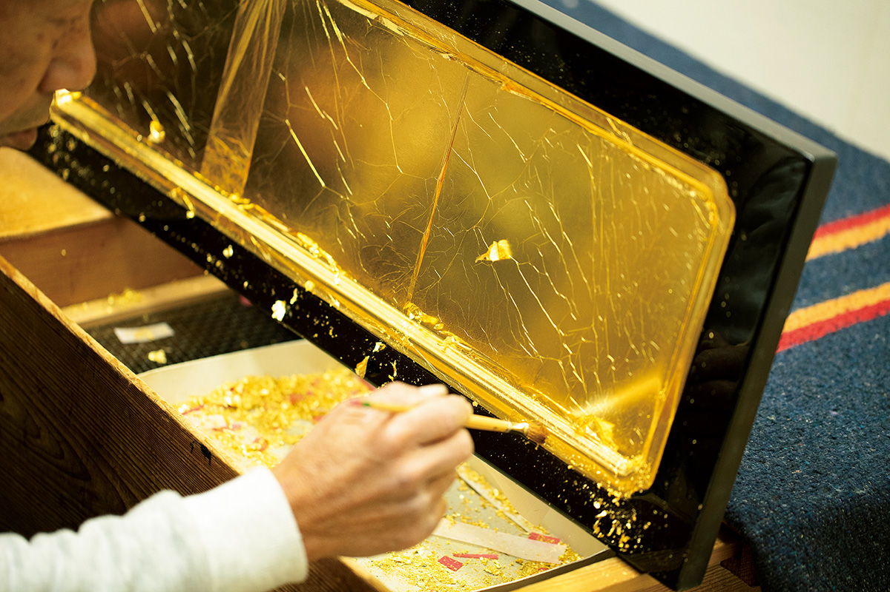
Раньше алтарь в Микаве держали в стенном шкафу, поэтому подставка у него низкая, а перекладина над нишей изогнута волной, чтобы лучше было видно главное изображение Будды. «В Микаве веру выражают красотой, поэтому во многих домах стоят прекрасные алтари», объясняет креативный директор фирмы Aichiya Butsudan Honpo.
Овари буцугу
Буддийскую утварь в Овари делают с начала эпохи Эдо, вместе с алтарями, из леса верховьев реки Кисо. Сначала это была подработка низших самураев, в эпоху Мэйдзи она стала семейным промыслом, и вещи разошлись по всей Японии, а до войны их вывозили даже на Тайвань и в Маньчжурию.
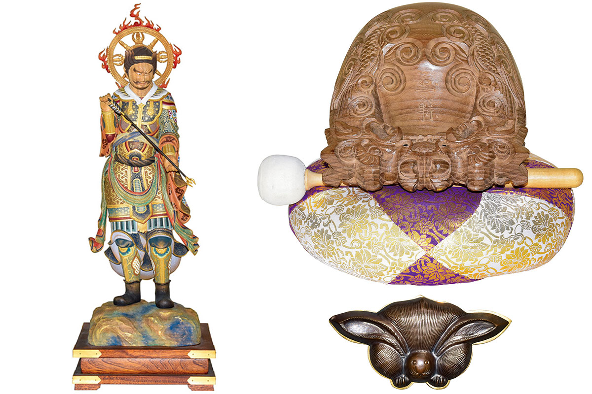
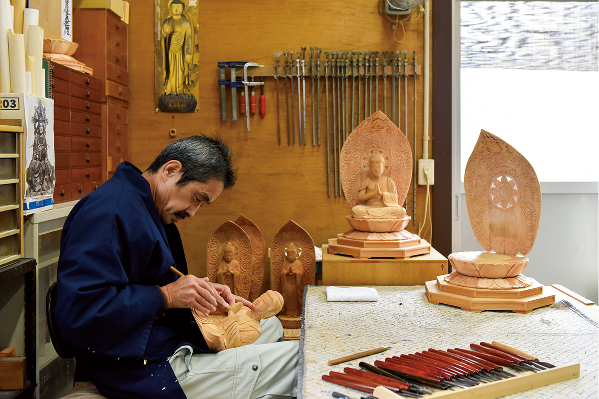
Почти всё здесь из дерева под лаком, и для каждой школы буддизма своя утварь. Каждый этап делает свой мастер: заготовку, резьбу, грунт, лак, роспись, металлические накладки, золотой узор макиэ и сусальное золото. «Массовое производство стало возможно благодаря разделению труда. Это дух ремесла самой Айти», говорит глава общества хранителей техники. Деревянные гонги мокугё и подставки для колокольчиков орин делают только в Овари.
Нагоя буцудан
Нагойские алтари собирают без единого гвоздя, на шипах, и они похожи на маленький храм: резная решётка над нишей разделена на три части, а на каждом углу стоит металлическая накладка. В окрестностях Нагои росли кипарисы кисо-хиноки, жило много плотников, строивших храмы и святилища, и город стал одним из главных центров алтарного дела в стране.
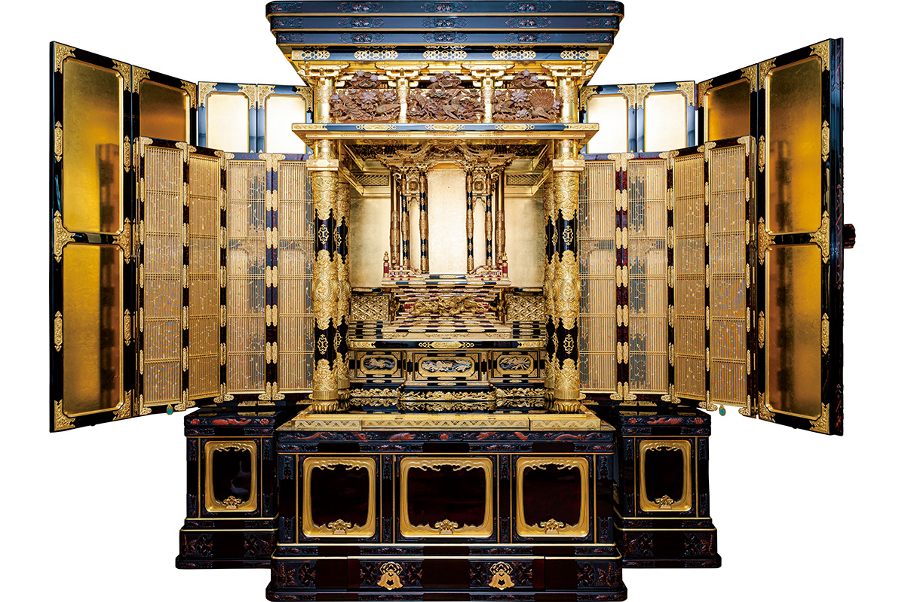
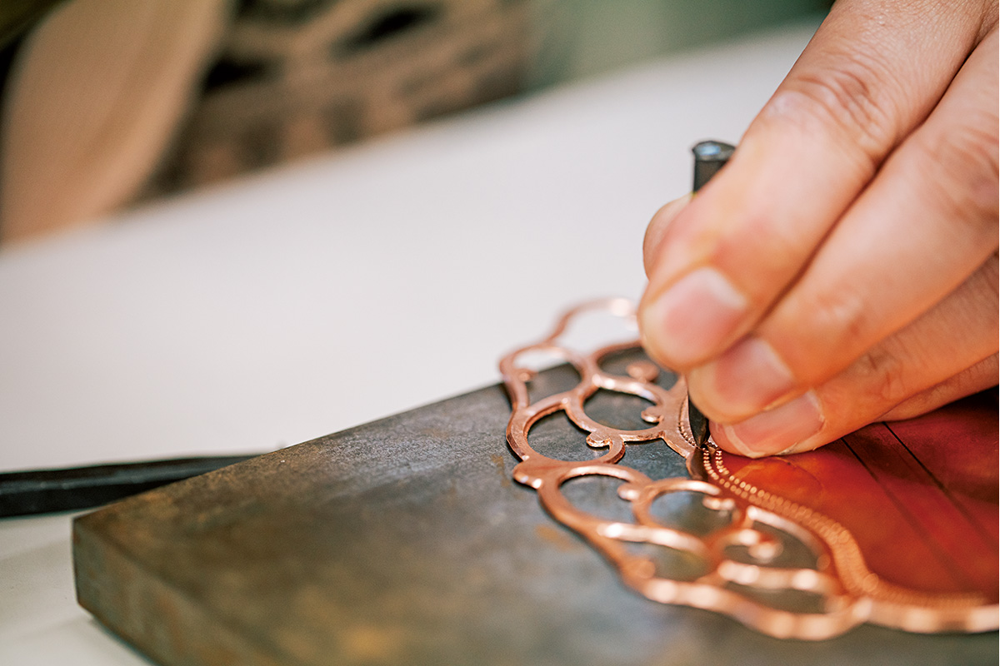
Золото и резьба покрывают даже обратную сторону колонн. Подставка у нагойского алтаря высокая: так его спасали от наводнений, когда разливались три реки Кисо. Внизу есть подъёмная дверца «макури», а за ней место для утвари. «Здесь всё придумано под жизнь людей», говорит глава семейной фирмы в пятом поколении. Нагойский алтарь на снимке показали в мастерской «Буцудан-но Оноя» (карточка в конце статьи).
Камень и глина
Фонари, кисти и черепица с демонами
Окадзаки сэккохин
Каменное ремесло Окадзаки началось в 1590 году: Ёсимаса Танака (1548–1609), владелец замка Окадзаки, пригласил каменотёсов из области Кансай строить призамковый город. Готовые изделия по реке Ягиси везли в Эдо и Осаку.
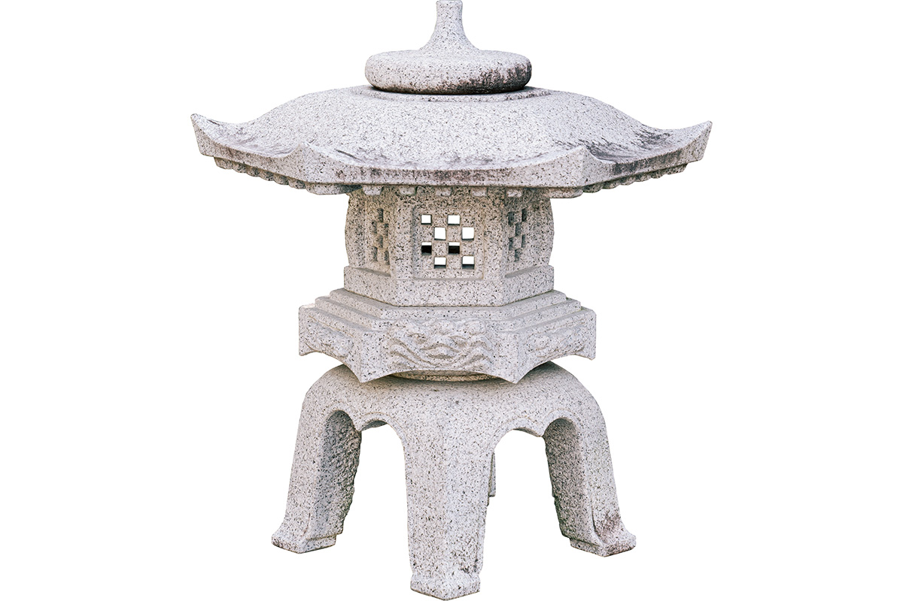
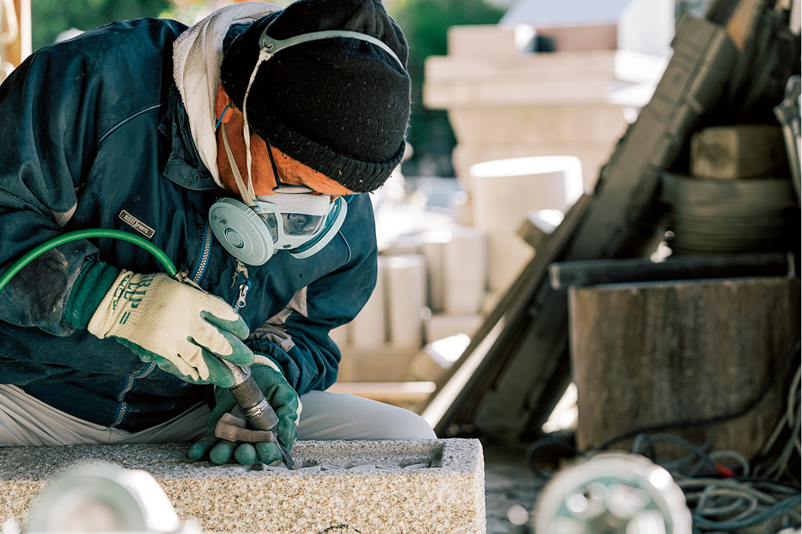
Окадзаки называют «городом камня». Гранит здесь добывают в окрестных горах, и у него есть особая вязкость, благодаря которой его удобно тонко обрабатывать руками. Это один из трёх крупнейших каменных центров Японии: вдоль улиц стоят мастерские с фонарями, статуями Будды и скульптурами. «Дотронешься до камня и чувствуешь, сколько в нём силы», говорит глава общества мастеров.
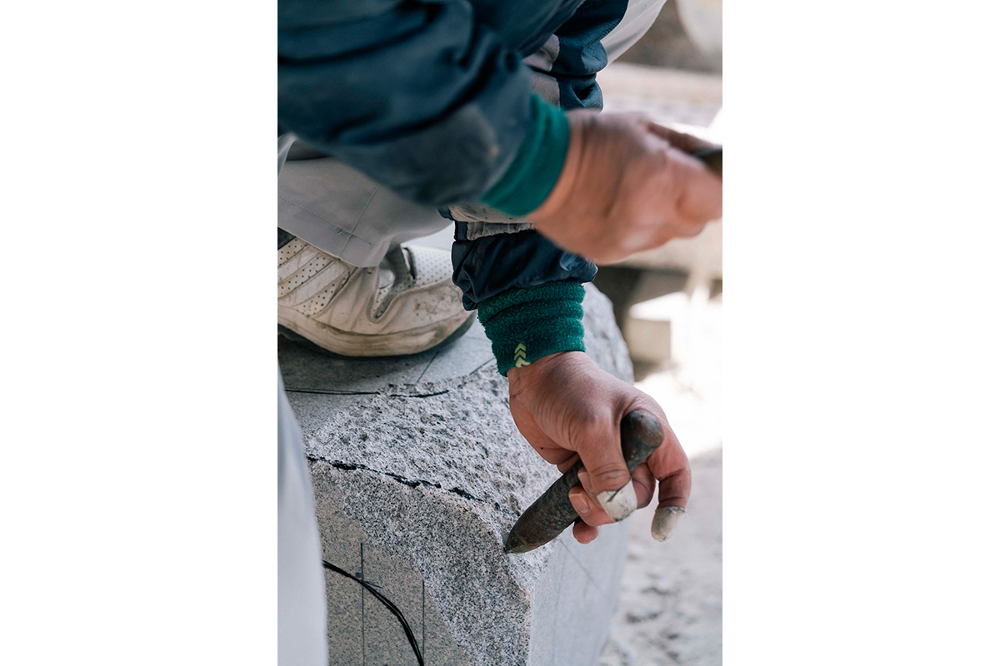
Тоёхаси-фудэ
В 1804 году княжество Ёсида, нынешний город Тоёхаси, пригласило мастера кистей из Киото. В конце эпохи Эдо кисти стали подработкой обедневших самураев, а в эпоху Мэйдзи, когда открылись школы, спрос вырос, и ремесло закрепилось в городе.
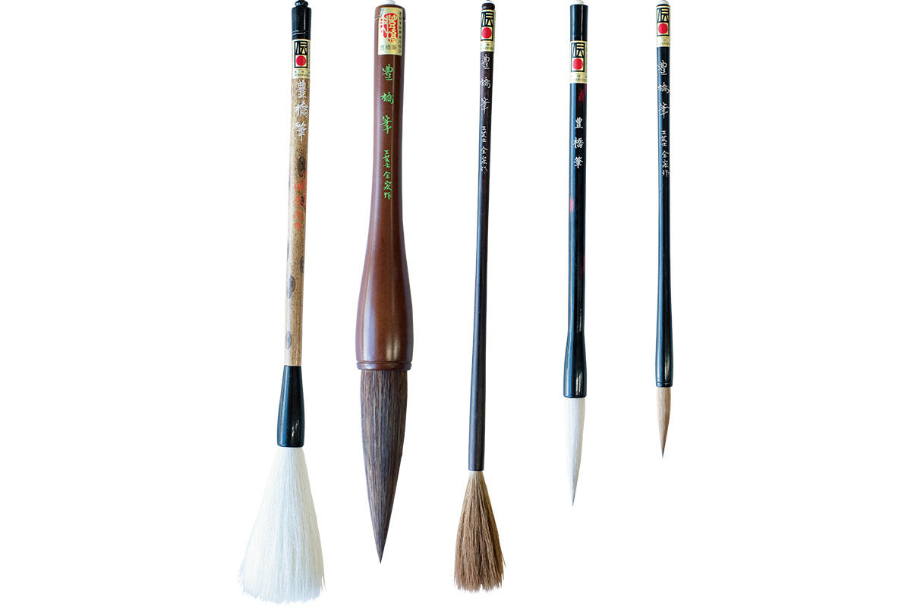
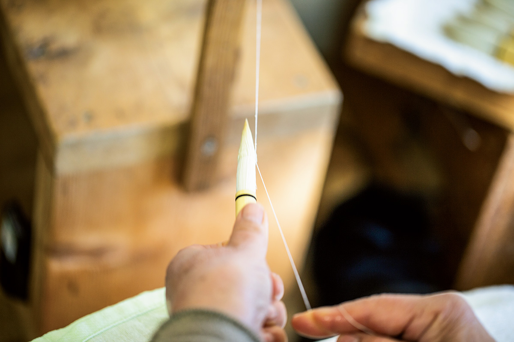
По числу кистей Тоёхаси второй в Японии после Кумано в префектуре Хиросима, а среди дорогих кистей для каллиграфии и живописи на него приходится больше 70% рынка. Волос нескольких животных здесь смешивают с водой, и кисть хорошо держит тушь и скользит по бумаге. Все 36 этапов проходит один мастер. «Раз всё в одних руках, можно выполнить и тонкий заказ, например взять волос потоньше», говорит мастер из мастерской «Сугиура сэйхицудзё».
Сансю онигавара
После больших пожаров в домах под соломой сёгун Ёсимунэ Токугава (1684–1751) в 1720 году стал поощрять черепичные крыши, и в западной Микаве началось черепичное дело. Река Ягиси приносила сюда глину с горы Санагэ, а море рядом позволяло отправлять товар в Эдо.
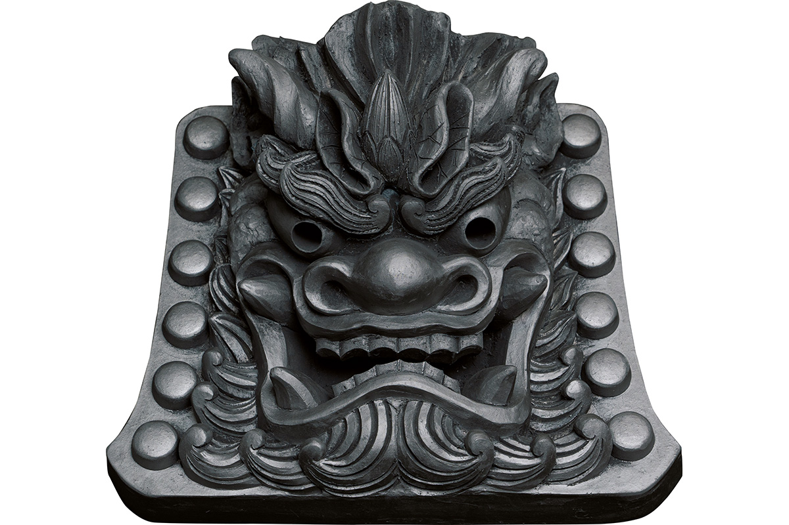
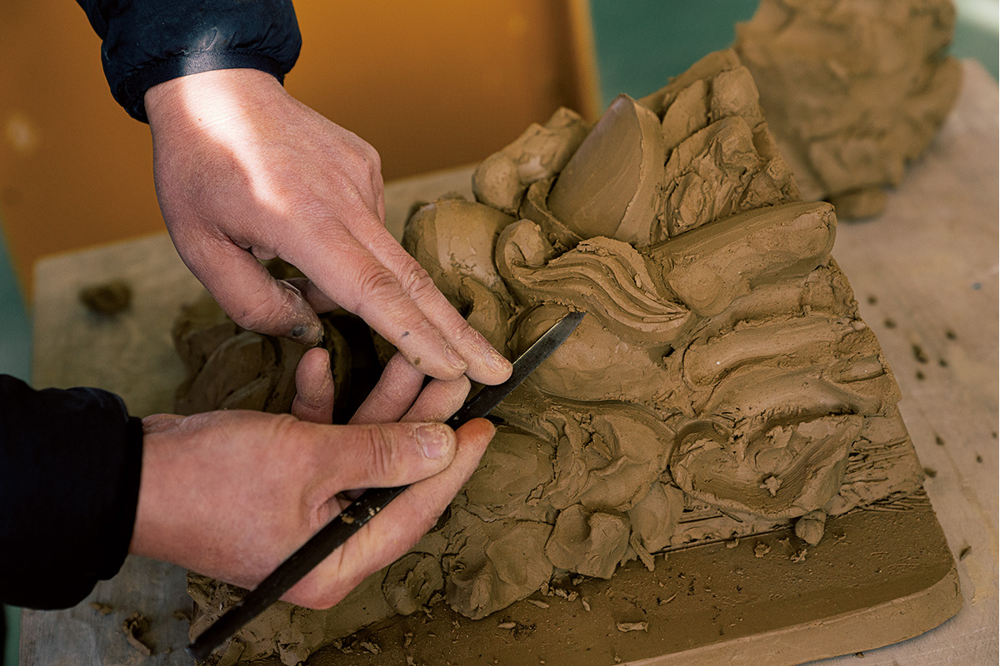
Черепица пришла в Японию из Китая вместе с буддизмом, а онигавара, торцевая черепица с мордой демона от злых сил, родилась уже в Японии. Её лепят мастера они-си: грубо формуют, а потом дорабатывают вручную лопаткой. Глазурью не покрывают, а в конце обжига перекрывают печи воздух, и глина с большим содержанием железа становится серебристой. Этот блеск называют «ибуси-гин». «Мы доделываем руками, поэтому у каждой вещи свой характер», говорит один из мастеров. Сансю, старое название этих мест, один из трёх великих черепичных центров Японии, и его мастера чинят крыши национальных сокровищ.
Город замка
Комоды, куклы и эмаль
Нагоя кири-дансу
Больше 400 лет назад мастера, строившие замок Нагоя, остались жить в призамковом городе и делали сундуки и комоды. Помогло и то, что рядом Хида, край павлонии кири.
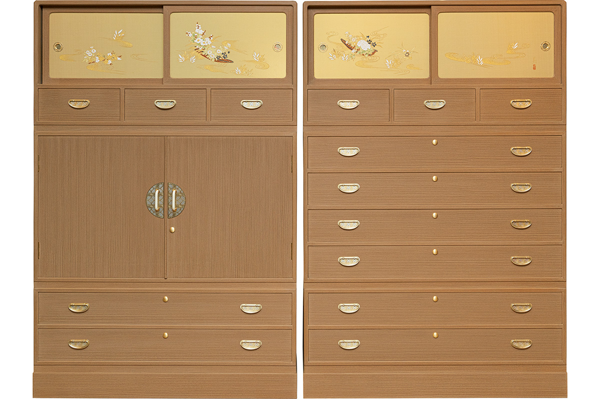
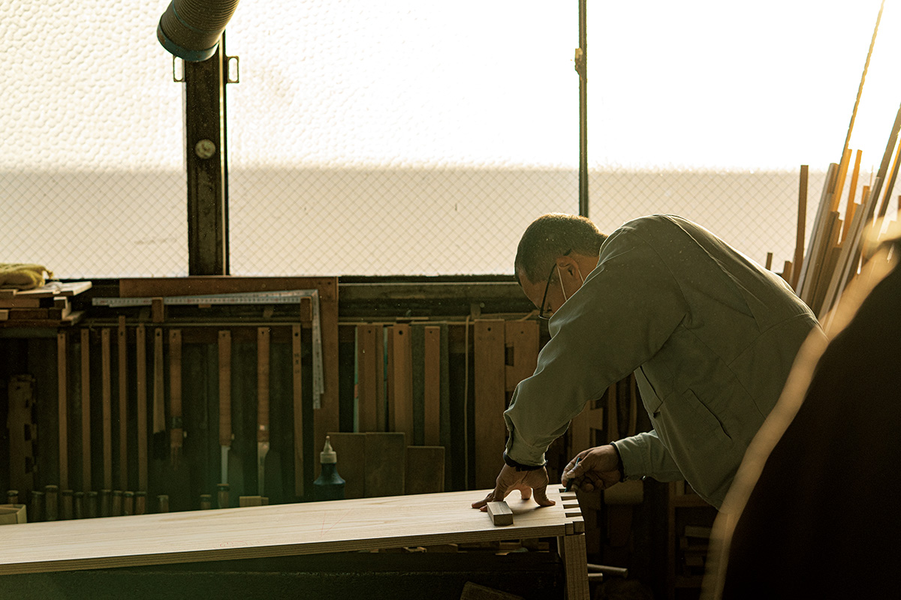
Комоды делают только из цельной павлонии: она плотно закрывается и отпугивает насекомых, поэтому защищает одежду от моли и плесени. Металлические ручки и накладки украшены, а раздвижные дверцы наверху расписывают золотом или лаком макиэ. Раньше вещи хранили в сундуках и плетёных коробах, но в эпоху Эдо хлопковые и шёлковые ткани стали доступнее, одежды стало больше, и появились выдвижные ящики. «Мы хотим придумывать для павлониевого комода новые формы под своё время», говорят в шоуруме «Идзумоя».
Нагоя сэкку-кадзари
Говорят, когда в доме Овари рождалась дочь, мастера княжества делали для неё куклы хина и бумажные фонари бомбори. Карпы-нобори выросли из нагойского производства флагов и знамён. Фонари делали из местной сосны и бумаги васи, а карпов из местного хлопка.
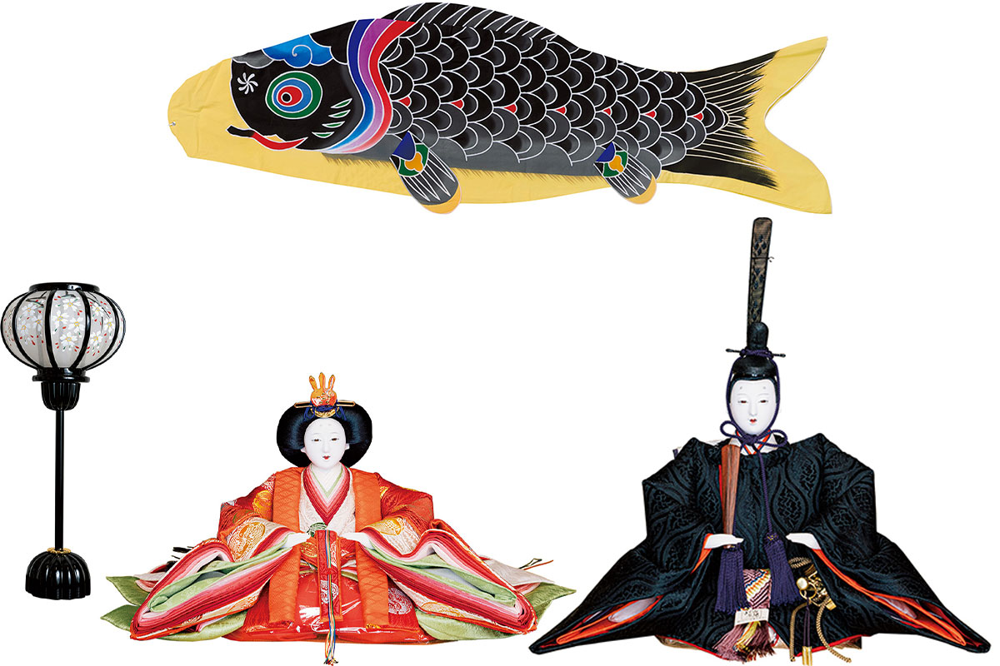
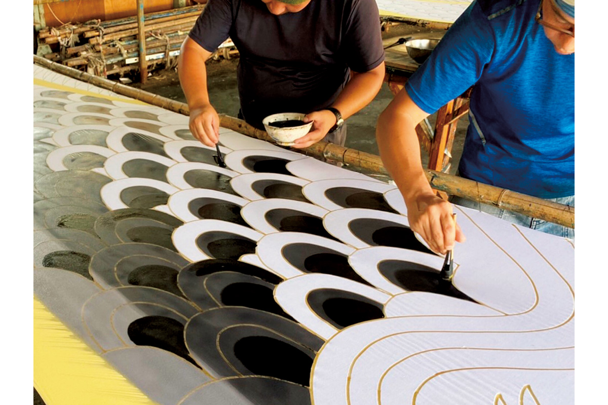
Мунэхару Токугава поощрял культуру, и в Овари расцвело мастерство механических кукол для праздничных повозок даси. От них техника перешла к праздничным куклам и карпам. Раньше куклы хина прятали руки в рукавах, но в 2021 году такие встречались редко. Мастера делают вещи по вкусам и востока, и запада Японии.
Овари сиппо
Перегородчатую эмаль Овари придумал в эпоху Тэмпо (1830–1844) Цунэкити Кадзи (1803–1883), второй сын самурая Овари. Он взял за образец эмалевое блюдо, привезённое голландским кораблём, и долго искал свой способ.
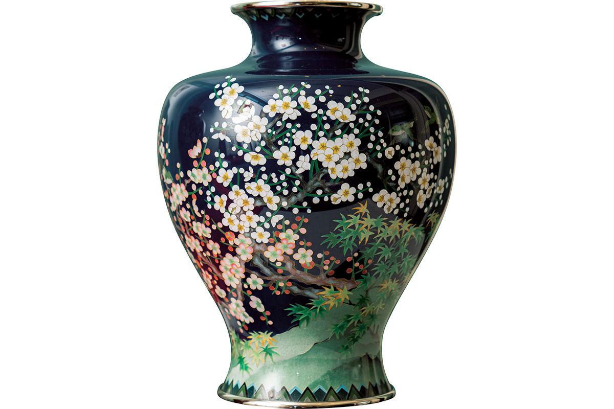
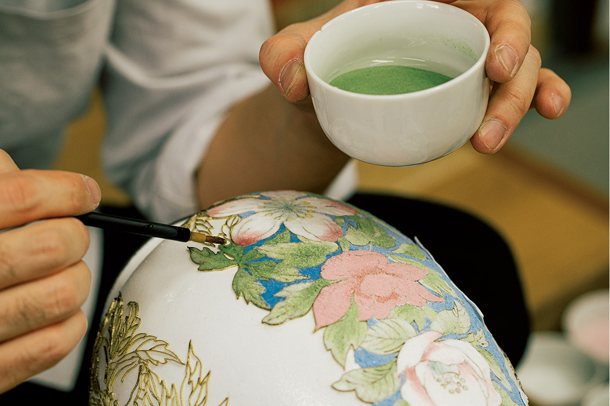
На медную основу наклеивают серебряную проволоку по контурам рисунка, а потом в ячейки наносят стеклянную эмаль и обжигают. В эпоху Мэйдзи вазы Овари возили на всемирные выставки, и их тонкость удивляла весь мир. «Согнуть проволоку по эскизу и поставить её по изгибу вазы требует большого умения», говорит мастер Ando Cloisonne.
Сегодня
Старое мастерство, новые вещи
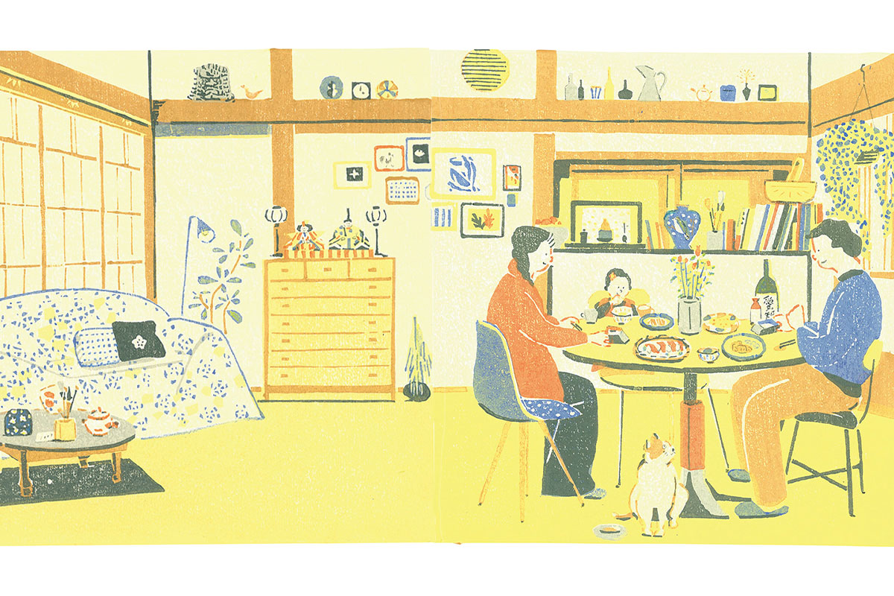
Мастера Айти не только хранят старые формы, но и пробуют новое. Каменотёсы Окадзаки делают из гранита подставки под чашки, кашпо и даже двери, чтобы камень был рядом в быту, как в Европе. Ando Cloisonne принимает заказы на рамки с фотографиями людей и домашних питомцев и памятные таблички для компаний. Красильня «Такэда Кахэй сётэн» пробует сибори на ткани, которая запоминает форму. «Идзумоя» делает павлониевые комоды для современных квартир, а «Андо сётэн», мастерская фонарей бомбори, светильники для курортных отелей.
Новые вещи замечают на выставках. Новый алтарь Aichiya Butsudan Honpo занял третье место на всеяпонской выставке алтарей и утвари в разделе нового дизайна. Черепичная мастерская «Маруити» вместе с дизайнером сделала чашечки для сакэ из черепичной глины: серебристую основу ибуси-гин соединили с глазурью, и их хорошо приняли на мебельной выставке в Милане. В 2021 году префектура присылала мастерам специалистов по маркетингу: так появились брелоки из шерсти домашних питомцев от мастеров кистей Тоёхаси и зажимы для галстука в технике металлических накладок Овари буцугу. В ноябре 2021 года в выставочном центре Aichi Sky Expo прошёл всеяпонский съезд традиционных ремёсел с мастер-классами и ярмаркой.
Где увидеть
Мастерские и магазины
Керамику Акадзу и Сэто сомэцукэ удобнее всего смотреть в самом Сэто: об этом наша статья о Сэто. Лавки сибори ждут в Аримацу, о них статья о сибори. Обо всех пятнадцати ремёслах префектура рассказывает на своём сайте jibasangyo.pref.aichi.jp.
Ando Cloisonne, магазин в Нагое
- Адрес
- префектура Айти, Нагоя, район Нака, Сакаэ, 3-8-8, здание «Нагоя Хэйва», 1-й этаж
- Телефон
- +81 52-251-1373
- Часы работы
- 10:00–18:00
- Выходные
- понедельник и вторник (в праздники открыто)
«Буцудан-но Оноя»
- Адрес
- префектура Айти, Нагоя, район Нака, Татибана, 1-6-5
- Телефон
- +81 52-331-7876
Aichiya Butsudan Honpo
- Адрес
- префектура Айти, Окадзаки, Номи-дори, 1-81
- Телефон
- +81 564-21-3341
- Часы работы
- 9:30–18:00
- Выходные
- вторник (в праздники открыто)
- Сайт
- aichiya.co.jp
«Сугиура сэйхицудзё»
- Адрес
- префектура Айти, Тоёхаси, Минова-тё, 5-13
- Телефон
- +81 532-61-8155
Шоурум «Идзумоя»
- Адрес
- префектура Айти, Касугаи, Маэнами-тё, Маэнами, 8-4
- Телефон
- +81 568-31-8627
- Часы работы
- 10:00–18:00, по записи
- Сайт
- izumoya.co.jp
Фото: Ацуси Ямахира, Аканэ Ямакита, Киёно Хаттори.